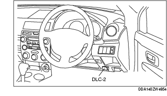

PCM configuration [ZY]
1. Connect the WDS or equivalent to DLC-2.

2. Set up WDS or equivalent (including the vehicle recognition).
3. Select "Module Programming".
4. Select "Programmable Module Installation".
5. Select "PCM" and perform procedures according to directions on the WDS or equivalent screen.
- • If the PCM is replaced with a new one, the PCM stores DTC P0602 and illuminates the MIL even though no malfunction is detected. This means the PCM has not been configured yet.
6. Retrieve DTCs by the WDS or equivalent, then verify that there in no DTC present.
- • If DTC is present, perform the applicable DTC inspection. (See DTC TABLE [ZY].)